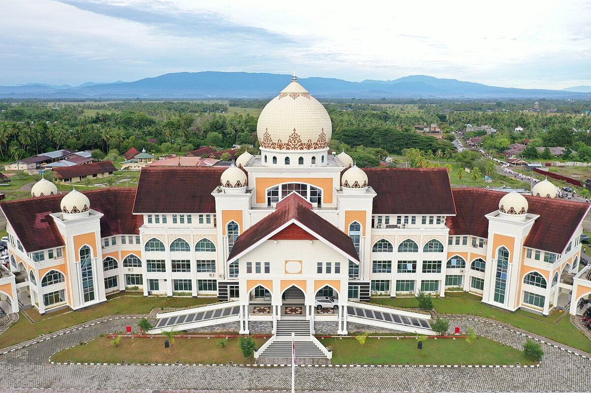
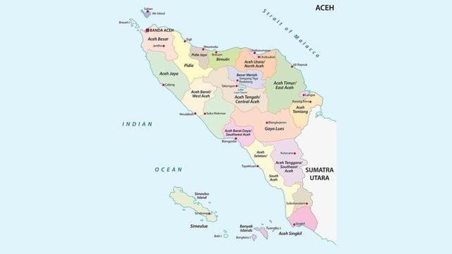

Sejarah

Wilayah Aceh Utara saat ini berada di kawasan yang dulunya merupakan bagian dari Kerajaan Islam
Samudera Pasai. Berdasarkan beberapa sumber, Kesultanan Pasai dikenal sebagai kerajaan pertama di
Nusantara yang menerapkan sistem pemerintahan Islam. Kesultanan ini mengalami masa kejayaan selama
sekitar 300 tahun, sebelum penjelajah Eropa datang dan menyerang, menyebabkan keruntuhan hampir
total. Hanya sedikit peninggalan sejarah yang tersisa dari masa kejayaan Kesultanan Pasai. Salah
satu peninggalan yang masih ada hingga sekarang adalah kompleks makam Sultan Malikussaleh dan
Sultanah Nahrasiyah, yang terletak di wilayah pesisir Kecamatan Samudera. Pada masa lalu, sering
ditemukan koin emas di bekas ibu kota Kesultanan Pasai, namun saat ini penemuan artefak semacam itu
sudah sangat jarang terjadi.
Geografi

Wilayah Aceh Utara memiliki topografi yang beragam, dengan dataran rendah yang luas di bagian utara
membentang dari barat ke timur, sementara pegunungan berada di bagian selatan. Ketinggian rata-rata
daerah ini sekitar 125 meter. Jalan lintas timur Sumatra melintasi dataran rendah, membuatnya lebih
maju secara ekonomi dibandingkan wilayah selatan yang terletak di pedalaman. Namun, daerah dataran
rendah sering terkena banjir, terutama di kecamatan seperti Lhoksukon, Matangkuli, Pirak, Samudera,
dan sekitarnya, akibat luapan sungai Keureutoe dan Sungai Pasee. Dataran rendah didominasi oleh
lahan pertanian seperti sawah dan permukiman, sementara di daerah pesisir terdapat tambak perikanan.
Meskipun potensial, pertanian di Aceh Utara masih bergantung pada irigasi tradisional dan sawah
tadah hujan. Dalam bidang perkebunan, Aceh Utara memiliki perkebunan kelapa sawit, karet, dan kakao
yang dikelola oleh PTPN I dengan luas lahan yang signifikan, termasuk juga lahan plasma milik
petani. PTPN I sebelumnya mengelola perkebunan tebu dan memproduksi gula di pabrik Cot Girek, namun
kini pabrik tersebut telah dikonversi menjadi pabrik pengolahan kelapa sawit.
Ekonomi
Mayoritas penduduk Aceh Utara bekerja di sektor pertanian, tetapi tingginya angka pengangguran yang
dipicu oleh rendahnya kualitas SDM telah membatasi perkembangan usaha jasa dan industri di wilayah
tersebut. Pada tahun 2017, Aceh Utara mencatatkan tingkat kemiskinan tertinggi di Aceh dengan
118.740 jiwa. Meskipun demikian, kabupaten ini juga dikenal sebagai kawasan industri terbesar di
luar Pulau Jawa, terutama setelah dibukanya industri pengolahan gas alam cair PT Arun LNG di
Lhokseumawe pada